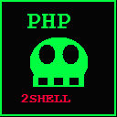

[!] Para recibir una reverse shell desde un servidor publico,
usa SSH a tu Kali + port forwarding, o NetHunter SSH.

PHP2P4IM0NSHELL
v1.2.0 // por P4IM0N
TARGET:desconocido
👁️ RECONOCIMIENTO_PASIVOESCANEANDO...
PHP:?sin datos
Inicializando fingerprint PHP...
📡 SONDA_ACTIVA (PHP:SESSION:UPLOAD)
Sube un archivo y sondea el JSON de progreso: detecta session.upload_progress real.
💀 MODULO_EXPLOTACION
LINUX
Bash TCP
Netcat Pipe
Python3
Perl
WINDOWS
PowerShell
Netcat.exe
PHP / SESION
id (prueba)
fingerprint host
reverse shell (LFI)
UAF cmd (max 14 bytes)
id>/tmp/p1
id>p1.txt
sh</tmp/c
Alpine Linux v86 con internet. Para shells reales usa SSH + port forwarding a tu Kali o NetHunter.
$
save_path
Inyectando Payload...
ESPERANDO ENTRADA...
🔗 CHAIN_HANDOFF — PoC fuera del navegador
El chain UAF necesita sockets crudos, multipart byte-exacto y lectura de Set-Cookie: no es alcanzable con fetch(). La extension valida los requisitos y te entrega el disparo calibrado.